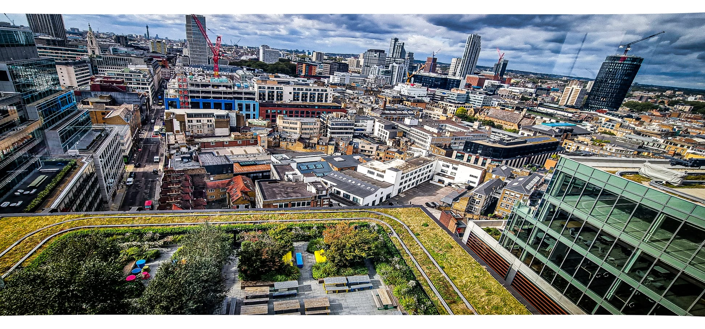

Why I Love Photography with Canon 5D Mark IV
I wanted to share a bit of my own passion for photography, especially using the Canon 5D Mark IV. It’s an incredible camera for both creative expression and technical exploration. Given your background, I think you’d find the intersection between photography and technology interesting. Here’s why:
- Sensor Technology and Image Processing: The 5D Mark IV uses a full-frame 30.4MP sensor...
- Autofocus and Computational Photography: The camera features a 61-point autofocus system...
- RAW Image Data: The ability to shoot in RAW allows you to capture uncompressed data...
- 4K Video and Computing: The 5D Mark IV also shoots 4K video...
Photos I Took
Here are a few shots I’ve taken with the Canon 5D Mark IV:
- Turkey: capture in alaiye turkey
- London :
- Manchester: AWS civil servant event in london...
- London: koinonia Crusade is manchester...

The 5D Mark IV is definitely a powerhouse, and if you ever want to dive into the intersection of photography and computing, there’s a lot of interesting work to explore! Would love to hear your thoughts.